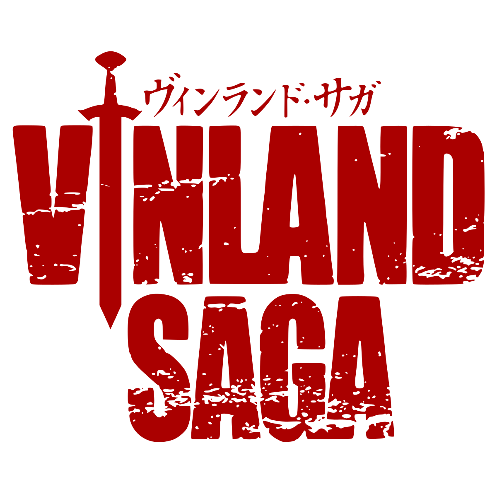
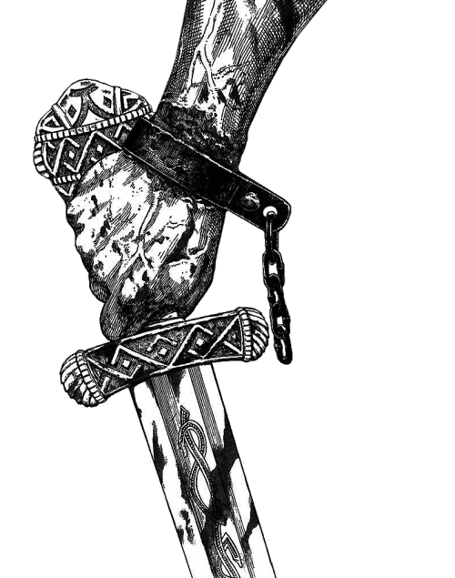
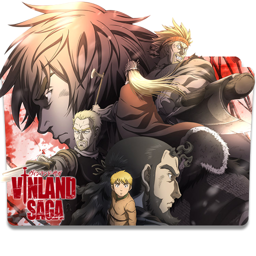

O jovem Thorfinn cresceu ouvindo histórias de velhos marinheiros que velejavam pelo oceano e chegaram na terra lendária, Vinland. É uma terra dita por ser quente e fértil, um lugar em que não haveria razão para lutar. Thorfinn, no entanto, percebeu que enquanto ele crescia, estava cada vez mais longe desta realidade.